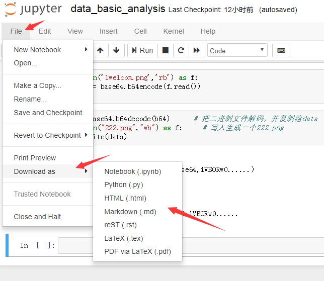

08. 转换 notebook
转换 notebook
Notebook 只是扩展名为 .ipynb 的大型 JSON 文件。

在文本编辑器中打开的 notebook 文件显示 JSON 数据
由于 notebook 是 JSON 文件，因此，可以轻松将其转换为其他格式。Jupyter 附带了一个名为 nbconvert 的实用程序，可将 notebook 转换为 HTML、Markdown、幻灯片等格式。
例如，要将 notebook 转换为 HTML 文件，请在终端中使用
jupyter nbconvert --to html notebook.ipynb我们也可以在notebook界面中点击File，在弹出的菜单中点击Download as，之后选择我们需要转换的格式。

要将 notebook 与不使用 notebook 的其他人共享，转换为 HTML 很有用。而要在博客和其他接受 Markdown 格式化的文本编辑器中显示 notebook，Markdown 很合适。
像平常一样，要详细了解 nbconvert，请阅读相关文档。